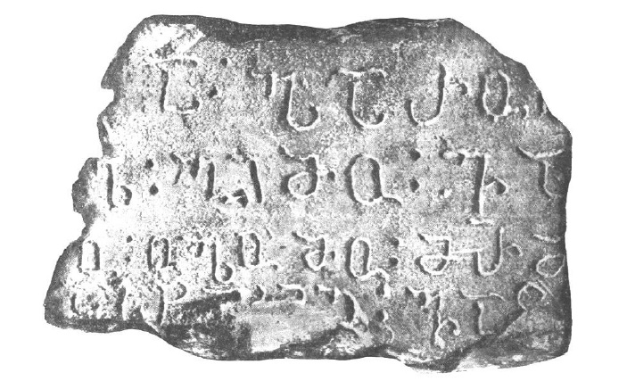

ურადას წარწერა დაღესტნიდან
შინაარსი / Summary
მოსახსენებელი
ბიბლიოგრაფია Bibliography
კრიტიკული გამოცემა Interpretive Edition
ქრისტედა ჰარო ლა
გორღელ გიმო ვა წი
ლო ოლო გიმო მარიამ იე
დასთარილ ვაც
დიპლომატიური გამოცემა Diplomatic Edition
ႵႰႨႱႲႤႣႠ ჀႠႰႭ ႪႠ
ႢႭႰႶႤႪ ႢႨႫႭ ႥႠ ႼႨ
ႪႭ ႭႪႭ ႢႨႫႭ ႫႠႰႨႠႫ ႨႤ
ႣႠႱႧႠႰႨႪ ႥႠႺ

ურადას წარწერა დაღესტნიდან
{'ka': 'ვევედრები ქრისტეს წყალობასა და განწმედას [ცოდვებისაგან] ოლოსა და მარიამისათვის, დასტარის ძმა.'}
{'default': 'ურადას წარწერა 1924 წელს ნიკო მარის კვლევის ობიექტად იქცა, მაგრამ მისი ნაშრომი მხოლოდ ნ. მარის გარდაცვალების შემდეგ, 1947 წელს გამოიცა.\n ნიკო მარი აღნიშნავდა, რომ „ფრაგმენტს ფრთხილად უნდა მოვეპყრათ, როგორც ქართული სასულიერო დამწერლობის არაქართული... ენების ძეგლთა ჩასაწერ ერთ-ერთ სახეობას“\n (Марр Н.Я. Албанская надпись. Краткие сообщения о докладах и полевых исследованиях Института истории и материальной культуры им. Н.Я. Марра. Вып. XV. М.-Л., 1947, 8).\n მკვლევრის აზრით, 4 სტრიქონიანი წარწერა, რომელსაც უნდა ჰქონოდა გაგრძელება მარჯვნივ, მომტვრეულია. წარწერის კითხვისას ნ. მარი ემყარებოდა ხუნძური ენის ლექსიკურ მარაგს,\n მაგრამ იყენებდა სხვა კავკასიური ენების მონაცემებსაც, რასაც ასაბუთებდა "ჩრდილოეთკავკასიელი იაფეტიდების წარმართულ წარმოდგენათა" საერთო ბაზისის არსებობით,\n ანუ იგი თვლიდა, რომ ჩრდილოეთ კავკასიაში რელიგიური ტერმინები გადადიოდა ერთი ენიდან მეორეში (იქვე, 11).\n ნ. მარი წერდა: „საკითხის მნიშვნელობა იმით კი არ გამოიხატება, რომ დავახვავოთ მკითხავური განმარტებები, რომლებიც ასე იოლი გამოსათქმელია საკონტროლო საშუალებათა\n (თუნდაც იმავე ენაზე არსებული სხვა წარწერების პარალელური იკითხვისების) უქონლობის პირობებში, არამედ ის, რომ შემდგომში გაგრძელდეს უკვე დაწყებული\n ჩრდილოეთკავკასიური მასალების დაგროვება“ (იქვე, 13). ნ. მარი წარწერას ხუნძური ენის საფუძველზე კითხულობდა. ნ. მარისეული წაკითხვა ასეთია:\n „ქრისტე ჩვენი ალბანეთისა (ვარიანტი: ჯვარო ჩვენო, ალბანელებისა)\n ღვთაებავ, წმიდაო\n ქალწულო მარიამ\n ასტარისაო, წმი...“ (Марр Н.Я. Албанская надпись…, 13).\n ტექსტის ამოკითხვისას ნ. მარი უდავოდ დარწმუნებული იყო მხოლოდ ერთ რამეში: „მესამე სტრიქონის დასასრულს ქარაგმის ნიშნის ქვეშ მრმ სამი ასოთი ჩაწერილია სახელი\n მარიამ, ანდა, შესაძლოა, წარწერის ენაზე მაჲრამ, ე.ი. „მარიამ“ (იქვე, 12). სხვა შემთხვევებში მეცნიერი წარმოადგენდა მეტ-ნაკლები ალბათობის ხარისხის იკითხვისებს.\n პირველი სტრიქონის პირველ ასოს, რომელიც წარმოდგენილია ორწერტილის წინ, ნ. მარი მიიჩნევდა ქრისტეს აღმნიშვნელად: „სწორედაც ქართული წარწერების ფორმულაა - „ქრისტე“\n ერთი ასოთი...“ (იქვე, 12). პირველი სტრიქონის მეორე სიტყვას, რომელიც წყდება ქვის კიდის მომტვრევის გამო, მეცნიერი კითხულობდა როგორც ჰარულ-ს და მიუთითებდა, რომ მეორე\n სტრიქონზე არის მხოლოდ ჰარ სეგმენტი, ხოლო მეორე სტრიქონის პირველი ასო ლ არის. ეს ჰარ სიტყვა თითქოსდა ალბანელთა სატომო სახელი იყო და ტექსტში წარმოდგენილია\n ხუნძური ენის ნათესაობითი ბრუნვის ფორმით (იქვე, 13). ამ ბგერის შემდეგ მეორე სტრიქონში მოდის ორწერტილი - განკვეთის ნიშანი, რომელსაც მოსდევს სიტყვა გიმო.\n ნ. მარის ვარაუდით, ეს სიტყვა არის\n ტერმინ გიმორ // გემორ-ის ვარიანტი და ითარგმნება როგორც „ზეცა; ღვთაება“ (იქვე, 12). მეორე სტრიქონის მომდევნო ორწერტილის მერე წერია ორი ასო ვა, რომლებიც კიდევ ერთი\n ორწერტილის წინ მდგომ მესამე სტრიქონის პირველ ასოსთან ერთად ნ. მარს მიაჩნდა ვაცო სიტყვად და თარგმნიდა როგორც „წმიდას“ (იქვე, 11).\n ანუ ხუნძური ტექსტი ასე იკითხება:\n (ქრისტედ)ა ჰარულა (გურღე)ლ გიმო ვა(წილ)ო\n „ქრისტესაგან ვითხოვ წყალობასა და განწმედას“.\n\n შაჰბან ჰაფიზოვი ეთანხმება ნიკო მარს, რომ პირველი სტრიქონის პირველი ასო არის ქრისტედა სიტყვის ბოლო ბგერის გადმომცემი, ხოლო მომდევნო ნაწილი შეიცავს\n ვედრებას ქრისტესადმი. მსგავსი ტექსტები შეიცავენ ფორმულას წობ ლ\'ეგი „დაე, წყალობა დაედოს“, რომელიც მოცემულ წარწერაში შეცვლილია სხვა მიმართვით:\n ჰარულა გურხ\'ელ გიმო ვაწჾილო. აქ ჰარუ აშკარად დასაწყისია სიტყვისა ჰარულა „ვითხოვ“ (ჰარი - „თხოვნა, ვედრება“ და ჰარიზე - „თხოვნა, ვედრება“\n Саидов М.С. Аварско-русский словарь. М., 1967, 170).\n ამის შემდეგ ტექსტში მოდის ლ ასო, რომელსაც შაჰბან ჰაფიზოვი გურხ\'ელ სიტყვის დასასრულად თვლის (შდრ. შესიტყვება გურხ\'ელ-წობ „ქველმოქმედება, გულკეთილობა“, იქვე, 153),\n რომელშიც გურხ\'ელ და წობ სინონიმებია და ამ სახით აძლიერებენ შესიტყვების მნიშვნელობას. დამოუკიდებლად ხმარებისას გურხ\'ელ-ს აქვს მნიშვნელობები:\n „სიბრალული, შებრალება; შეცოდება; თანალმობა; ქველმოქმედება, გულკეთილობა“ იქვე, 152-153).\n მეორე სტრიქონზე ლ ასოსა და განკვეთის ნიშნის მერე მოდის 4 ასო, რომლებიც წარმოქმნიან სიტყვა გიმო-ს (მისი ვარიანტია გიმუ), რაც ხუნძურ ფოლკლორში\n გამოიყენება ქართული -ც ნაწილაკის ფუნქციით. მაგალითად, ერთ ეპიკურ სიმღერაში ისმის სოფელთა დაწყვილებული სახელები: ბუხთიბგიმუ სუღრალ\' - „ბუხთი და სუღრათლი“,\n ჰიდგიმუ ყარალალ - „ჰიდი და ყარალალი“, ყელგიმუ ტელტ\'ალ - „ყელი და ტელტლალი“...(Надир-шагь щущахъ виххизави /хIадурана Ш. ХIапизовас ва Ж. МаламухIамадовас/.\n МахIачхъала, 2012, 26, 27, 48, 51). თანამედროვე ხუნძურ ენაში ეს კავშირი გამოიყენება -გი ვარიანტის სახით, ხოლო\n სრული გიმო // გიმუ სახეობები მხოლოდ ფოლკლორშია შემონახული. წარწერის ტექსტში ეს კავშირი ცალკე წერია და გამოყოფილია განკვეთის ნიშნით, ორწერტილით,\n ამჟამად კი იწერება წინამავალი სიტყვის დაბოლოებად.\n II სტრიქონზე იკითხება კიდევ ორი ასო ვა..., რომლებიც უნდა იყოს ნაწილი სიტყვისა ვაწჾილო „განწმედა (ცოდვებისაგან)“, შდრ. ვაწჾადავ „სუფთა, წმინდა, უცოდველი“ და\n „პატიოსანი, ალალი“ (Саидов М.С. Аварско-русский словарь. М., 1967, 125).\n III სტრიქონის დასაწყისში ცალკე დგას ასო ო ან უ, რომელსაც მოსდევს განკვეთის ნიშნებით გამოყოფილი სიტყვა ოლომო. ამ სიტყვის ჩაწერის წესიდან გამომდინარე,\n იგი ორნაწილიანი უნდა იყოს: ოლო მარცვლების მერე მცირე ლაკუნა ჩანს, შემდეგ კი წერია მო. არ გამოირიცხება, რომ აქ მო მარცვლის წინ გამოტოვებული იყოს გი მარცვალი\n და ტექსტი ასე აღდგეს: ოლო (გი)მო. ამის შემდეგ სტრიქონის ბოლოში იკითხება სამი ასო მრმ, რომლებიც უყოყმანოდ იკითხება, როგორც მარიამ.\n ასე რომ, III სტრიქონის ტექსტი აღდგება ამგვარად: ოლო (გი)მო მარიამ „ოლო და მარიამი“. ქართული და ხუნძური ფონოლოგიური სისტემებისა (ქართულ ენას არ მოეპოვება\n ღ-ს მსგავსი ჰოე ბგერა, რომელიც აქ აშკარად გამოტოვებულია) და ხუნძური ონომასტიკონის მონაცემთა გათვალისწინებით აქ ჩაწერილი უნდა იყოს ხუნძური\n მამაკაცის პირსახელი ოლო (ვარიანტი: ოლავ), რაც ითარგმნება როგორც „ახალგაზრდა, ჭაბუკი“. ჰიდათლის დიალექტში მამაკაცთა სახელები დღესაც კი არცთუ იშვიათად\n ბოლოვდება -ლო სუფიქსით მაშინ, როცა სხვა კილოებსა და კილოკავებში, აგრეთვე სამწიგნობრო ხუნძურ ენაში გავრცელებულია სუფიქსი -ლავ (მაგალითად, ადალო\n ზოგადხუნძური ადალავ ფორმის ნაცვლად). ე.ი. წარწერაში იხსენიებიან მამაკაცი და ქალი (ცოლ-ქმარი?) სახელად ოლო და მარიამი, რომელთათვისაც გამოითხოვენ\n ქრისტესაგან წყალობასა და ცოდვათა მიტევებას. თუმცა ამგვარ წაკითხვას აქვს სუსტი მხარეც: ესაა ვაწჾი-ლო „განწმედა“ ზმნის მხოლობითი რიცხვის ფორმა იმ დროს,\n როცა ორი პიროვნების შესახებ წერისას უნდა გამოყენებულიყო მრავლობითი რიცხვის რაწჾილ\'ი ფორმა, მაგრამ გამონაკლისები ამ შემთხვევაშიც არსებობს იმ არსებით სახელთა სახით,\n რომლებიც ნაზმნარი მამაკაცის კლასის გაქვავებული ფორმებია და იხმარება ყველა გრამატიკული კლასის აღსანიშნად. შაჰბან ჰაფიზოვი ვარაუდობს,\n რომ ეს სიტყვა გავრცელდა ცოცხალ მეტყველებასა და წერით ტრადიციაში და გაგებული იყო როგორც ზოგადი ფორმა მამაკაცის, ქალისა და ნივთთა გრამატიკული კლასებისა.\n ნ. მარი IV სტრიქონს კითხულობდა როგორც ასთარილ ვაც (ხუნძ.) „ასთარელი წმიდანი“ (იგულისხმება მარიამი), თუმცა თვითონვე მიიჩნევდა დასაშვებად, რომ ხუნძური ენის\n საფუძველზე „ძნელი არ იყო მისი განმარტება, როგორც ნათესაობის ტერმინისა“ (Марр Н.Я. Албанская надпись… 10) და რატომღაც ვაც „ძმა“ სიტყვის მნიშვნელობად უთითებდა „ვაჟს“ (შდრ. ვას "ვაჟი").\n შაჰბან ჰაფიზოვი ფიქრობს, რომ აქ უნდა იხსენიებოდეს ნათესაობის ტერმინი და არა წმიდანი. გაცილებით რთულია პირველი ...ასთარილ სიტყვის წინა ნაწილის რეკონსტრუქცია, რომელიც\n მაინცდამაინც ნ. მარის ვერსიის მიხედვით არ უნდა იკითხებოდეს. საქმე ისაა, რომ IV სტრიქონი ნაკლულია - მომტვრეულია მისი ქვედა კიდე, რაც აძნელებს მის ამოკითხვას.\n მიუხედავად ამისა, შ. ჰაფიზოვის აზრით, ნ. მარმა სწორად ამოიკითხა პირველი სამი (...ასთ) და ბოლო სამი ასო (...რილ) მაშინ, როცა შუაში ჩაწერილი ხმოვნის (...ა...)\n ამოკითხვა უნაკლო სულაც არ არის და აქ შესაძლებელია რამდენიმე ვარიანტის შემოთავაზება. ეს სტრიქონი შეიძლება აღვადგინოთ ასე: დასთარილ ვაც „დასთარის ძმა“.\n ალბათ აქ იხსენიება ვინმე დასთარ-ის, ანდა დასტურ-ის ძმა, რომელმაც, შესაძლოა, შეასრულა ეს წარწერა, ანდა ფიგურირებდა ამ ტექსტში რაიმე სახით.\n მაგრამ, ერთი მხრივ, ხუნძურში ამგვარი სახელები არ დასტურდება, ხოლო, მეორე მხრივ, ირანის სახელმწიფოებრივი სისტემა მძლავრ გავლენას ახდენდა აღმოსავლეთ კავკასიაზე,\n კერძოდ, ხუნძეთზე. ამის გამო საზოგადოებრივ-პოლიტიკურ ტერმინთა დიდი ნაწილი ირანული წარმომავლობისაა. ამიტომ სავარაუდოა, რომ სიტყვა დასთარ-იც ირანული\n წარმოშობისაა. ყველაზე მეტად მოსალოდნელია, რომ აქ საქმე გვაქვს საშუალსპარსულ დასთუარ ან ახალსპარსულ დასთურ ვარიანტთაგან ერთ-ერთთან, რომელიც სასანიანთა\n ეპოქაში აღნიშნავდა „ავტორიტეტს, ძალის მქონეს, მფლობელს“, მოგვიანებით კი მისი სემანტიკა შეივსო ახალი მნიშვნელობებით, რაც იცვლებოდა დროისა და გარემოებათა\n შესაბამისად (Encyclopædia Iranica.1994. Vol. VII, Fasc. 1, 111-112). ი. იაკუბოვიჩის სიტყვით, საშუალსპარსული დასთუარ „ავტორიტეტი“ მომდინარეობს\n დასთა „ხელი“ და ბარ „ტარება, წარმოება, მიდება“ სიტყვებისაგან (Якубович И.С. Новое в согдийской этимологии. М., 2013, 56, 65).\n (შდრ. ხუნძური ანალოგი: ქვერშჾელ „ხელისუფლება“ ქვერ „ხელი“ და შჾვეზე „მიღება, მოპოვება“). ზოროასტრიზმში დასთურ ეწოდება მაღალი რანგის სასულიერო პირს,\n ვინც ხელმძღვანელობს ოლქის რელიგიურ თემს. გარდა ამისა, ეს ტერმინი საერო ლიტერატურაში იხმარება „ხელმძღვანელის; დამრიგებლის“ მნიშვნელობით.\n თანამედროვე სპარსული ენის ლექსიკონში დასტურ სიტყვას აქვს 2 მნიშვნელობა: „ვეზირი, მინისტრი, მრჩეველი“ და „მთავარი ქურუმი ზოროასტრიზმში“\n (Персидско-русский словарь, под редакцией Ю.А. Рубинчика. М., 1970. Т. I, 639).\n ქართულ ენაში სიტყვა დასტური შევიდა დაახლოებით იმავე მნიშვნელობებით: „წესდება, ინსტრუქცია, განაწესი“\n (Сургуладзе И.И. История государства и права Грузии. Тбилиси, 1968, 90). განსაკუთრებით საყურადღებოა ქართული ენის\n თუშურ დიალექტში სიტყვა დასტურ-ის არსებობა, რომლითაც აღინიშნება „ჯვრის, ხატის მსახური“, ანუ ქრისტიანი ღვთისმსახური. შაჰბან ჰაფიზოვის აზრით, ცხადი არ არის, განსახილველ წარწერაში\n აღდგენილი დასთარ სიტყვა რომელი სემატიკითაა გამოყენებული - თანამდებობის სახელად თუ მამაკაცის პირსახელად.\n გ. ჩურსინის მიერ 1927 წელს სოფ. ურადაში ჩაწერილი გადმოცემის მიხედვით, ოდესღაც „ჰიდათლის ხეობას პატრონობდა ლეგენდარული ფეოდალი ოლო,\n რომელიც ცნობილი გახდა თავისი სისასტიკით და იმით, რომ შიშის ზარს სცემდა როგორც ჰიდათლელებს, ისე ხუნზახელებს. ჰიდათლელებმა და ხუნზახელებმა\n ერთობლივად შეუტიეს ოლოს, დაამარცხეს მისი ლაშქარი, თვითონ კი მოკლეს“ (47Чурсин Г.Ф. Авары. Этнографический очерк. 1928 г. /редактор Р.И. Сефербеков/. Махачкала, 2008, 24).\n მსგავსი თქმულება, რომელშიც ნაამბობია, თუ როგორ გადაისროლეს კლდიდან\n აჯანყებულმა ჰიდათლელებმა თავიანთი მრისხანე ბატონი ოლო-შოავხი, XX საუკუნის დასაწყისში ჩაიწერა ბ. მალაჩიხანოვმა, რომელიც ხაზგასმით აცხადებდა,\n რომ ამ ტერმინით (მხოლობით რიცხვში - შაუხა, მრავლობითში - შუხბი) აღნიშნავდნენ „ჰიდათლის ხეობის ზედა კლასობრივ ფენას“ (Багадур Малачиханов /автор-составитель А.М. Муртазалиев/. Махачкала, 2004, 211).\n ამასთან დაკავშირებით წამოიჭრება საკითხი ურადას წარწერის ოლოსა და ლეგენდარულ ფეოდალ ოლოს იგივეობის შესახებ. შ. ჰაფიზოვის აზრით, საკითხის ასე დასმა დროულია იმის გათვალისწინებით,\n რომ მოსახსენებელი წარწერის დაკვეთა არ იქნებოდა ჩვეულებრივი ამბავი და ყველაზე მეტად იგი უნდა დავუკავშიროთ ზეპურთა ფენის პრივილეგიებს.\n თუ გავითვალისწინებთ წარწერაში ვინმე დასთარ/დასთურის ხსენების ფაქტსაც, რომელიც ადგილობრივ ფეოდალად (იქნებ ამასთანავე ქრისტიანული სალოცავის მსახურადაც?)\n უნდა ვცნოთ, როგორადაც ზეპირ ტრადიციას გამოჰყავს ოლო, ეს ვერსია მეტ დამაჯერებლობას იძენს. შ. ჰაფიზოვი დასძენს, რომ ჰიდათლში ცნობილია ადგილობრივ მმართველთა\n ფენა ჭუჰბი // შუხბი, რომლებიც, შესაძლოა, იმ ოლოს შთამომავლები არიან. ამრიგად, წარწერა შესრულდა დასთარის, ანუ ადგილობრივი ფეოდალის,\n სახელად ოლოს ძმის მიერ და ეძღვნება მის გარდაცვლილ ძმასა და რძალს მარიამს.'}
<div type="edition" xml:lang="ka" ana="mtavruli" xml:space="preserve">
<ab>
<lb n="1"/><w lemma="ქრისტე"><expan><abbr>ქ</abbr><ex>რისტ</ex><abbr>ე</abbr></expan></w>
<w lemma="განსუენება"><expan><abbr>გა</abbr><ex>ნ</ex><abbr>ო</abbr><ex>ჳ</ex><abbr>ს</abbr><ex>უ</ex><abbr>ენე</abbr></expan></w>
<w lemma="სულ">სოჳ<lb n="2" break="no"/>ლსა</w>
<name nymRef="ვაჩა">ვაჩაჲს<lb n="3" break="no"/>ასა</name>
<name nymRef="გურა"><expan><abbr>გო</abbr><ex>ჳ</ex><abbr>რაჲ<lb n="4" break="no"/>სასა</abbr></expan></name>
<name nymRef="მირა"><expan><abbr>მ</abbr><ex>ი</ex><abbr>რა</abbr><ex>ჲ</ex><abbr>ს</abbr><ex>ა</ex><abbr>ს</abbr><ex>ა</ex></expan></name>
</ab>
</div>